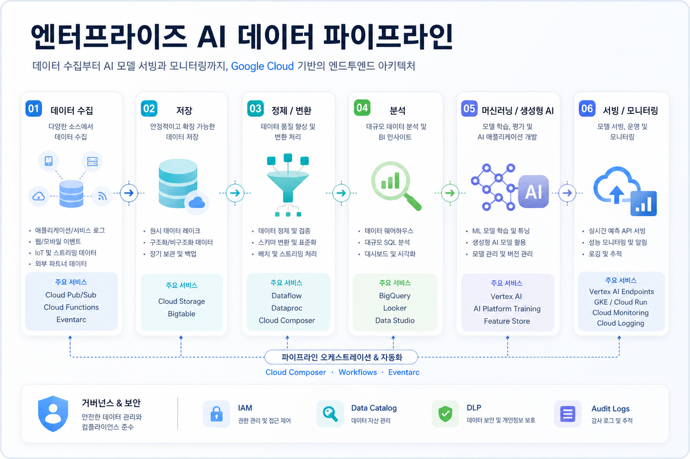
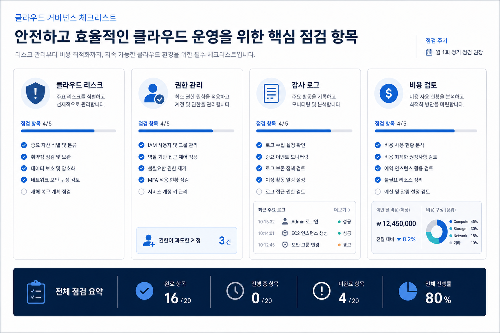

구글 클라우드 블로그 - 데이터 분석
Managed Service for Apache Spark 클러스터 개선 사항
Managed Service for Apache Spark 클러스터 관련 개선 사항을 다룬 구글 클라우드 블로그 게시물입니다. 적용 전 런타임, 클러스터 구성, 비용과 권한 조건은 공식 문서로 확인이 필요합니다.
Managed Service for Apache Spark 클러스터 개선 사항신규 및 24시간 문서가 없어 최신 저장 문서를 참고했으며, 당일 신규성은 확인 필요으로 작성했습니다. 관찰된 사실, 원문 근거, 기업 의사결정자가 확인해야 할 리스크와 기회를 분리해 정리했습니다.
구글 클라우드 블로그 - 데이터 분석
Managed Service for Apache Spark 클러스터 관련 개선 사항을 다룬 구글 클라우드 블로그 게시물입니다. 적용 전 런타임, 클러스터 구성, 비용과 권한 조건은 공식 문서로 확인이 필요합니다.
Managed Service for Apache Spark 클러스터 개선 사항구글 클라우드 블로그 - 데이터 분석
서버리스 Managed Service for Apache Spark 런타임 3.0 기능을 소개한 게시물입니다. 데이터 처리 성능과 호환성 검토가 필요한 항목입니다.
서버리스 Managed Service for Apache Spark 런타임 3.0 기능구글 클라우드 블로그 - 데이터베이스
Spanner Graph 알고리즘을 소개한 게시물입니다. 그래프 분석 요구와 기존 Spanner 데이터 모델의 연결 가능성을 검토할 수 있습니다.
Spanner Graph 알고리즘 소개구글 클라우드 블로그 - 데이터 분석
gcs-analytics-core를 활용한 Iceberg 및 Spark 워크로드 최적화 게시물입니다. 저장소 접근, 분석 비용, Spark 구성 조건을 함께 확인해야 합니다.
gcs-analytics-core로 Iceberg 및 Spark 워크로드 최적화이번 수집 자료에서는 구글 클라우드가 인공지능, 데이터 분석, 보안, 인프라, 데이터베이스 영역에서 제품 기능과 고객 적용 사례를 지속적으로 세분화해 공개하고 있음을 확인했습니다. 단, 오늘 저장된 신규 문서가 없는 경우에는 이 해석의 당일 신규성은 확인 필요입니다.
기술 변화의 의미는 개별 기능보다 기존 데이터·보안·인프라 통제 체계와 연결될 때 커집니다. 원문에 언급된 서비스의 출시 단계, 리전, 가격, 권한 모델은 기업 적용 전에 별도로 확인해야 합니다.

| 관찰된 사실 | 근거 출처 | 의사결정 검토 포인트 |
|---|---|---|
| 구글 클라우드 블로그의 최신 게시물은 특정 서비스 기능, 고객 사례, 아키텍처 적용 방식을 중심으로 구성됩니다. | 이번 실행에서 수집·검증한 블로그 원문과 로컬 마크다운 | 도입 검토 시 기능 자체보다 권한, 데이터 위치, 비용, 운영 책임 경계를 함께 확인해야 합니다. |
| 데이터와 인공지능 관련 변화는 분석·검색·모델 사용·거버넌스 흐름이 함께 연결될 때 가치가 커집니다. | 수집 문서의 요약, 핵심 내용, 서비스 키워드 | 데이터 품질, 접근 권한, 감사 로그, 기존 업무 시스템 연동 가능성을 사전에 검토해야 합니다. |
| 보안·인프라·데이터베이스 업데이트는 기존 아키텍처에 즉시 영향을 줄 수 있으나 세부 조건은 원문만으로 부족할 수 있습니다. | 구글 클라우드 블로그 원문 메타데이터와 본문 요약 | 리전 지원, 미리보기 여부, 가격 정책, 장애·변경 관리 절차는 공식 문서로 후속 확인이 필요합니다. |

한국 기업은 글로벌 클라우드 기능 업데이트를 단순한 신기능 목록이 아니라 규제, 데이터 주권, 보안 심사, 운영 비용, 기존 업무 시스템과의 연결 조건으로 재해석할 필요가 있습니다.
이번 자료만으로 산업별 적용 우선순위나 구체적인 도입 효과를 단정하기는 어렵습니다. 따라서 원문 기반 기술 검토와 별도의 공식 문서 확인을 분리하는 방식이 안전합니다.
수집 원문에서 직접 확인되는 서비스와 기능을 중심으로 적용 후보를 좁히고, 내부 데이터·권한·비용 조건에 맞는지 검증합니다.
출시 단계, 리전, 가격, 할당량, 서비스 계정 권한, 로그 보존 정책이 불명확하면 확인 필요로 두고 공식 문서 확인 전 확정 판단을 피합니다.
인공지능과 데이터 기능은 사용자 권한, 감사 로그, 민감정보 처리, 외부 연결 정책을 함께 점검해야 합니다.
목적: 히어로 이미지. 삽입 위치: 상단 상단 영역. 이미지 생성 프롬프트: 한국어 기업 기술 블로그용 구글 클라우드 일일 브리핑 추상 시각화, 클라우드, 데이터, 인공지능, 보안 노드를 고급스럽게 표현, 텍스트는 최소화. 권장 비율: 16:9. 대체 텍스트: 구글 클라우드 일일 브리핑 핵심 이미지를 표현한 시각 자료.
목적: 기술 변화 의미 섹션. 삽입 위치: 핵심 트렌드 분석 옆. 이미지 생성 프롬프트: 엔터프라이즈 인공지능과 데이터 파이프라인, 구글 클라우드 서비스 연결, 카드형 인포그래픽, 한국어 전문 블로그 톤. 권장 비율: 16:9. 대체 텍스트: 엔터프라이즈 인공지능 데이터 클라우드 분석 흐름을 표현한 이미지.
목적: 거버넌스 섹션. 삽입 위치: 한국 기업 관점 시사점 옆. 이미지 생성 프롬프트: 클라우드 리스크, 권한, 감사 로그, 비용 검토를 상징하는 한국어 기업 보고서형 시각 자료. 권장 비율: 16:9. 대체 텍스트: 한국 기업 관점의 클라우드 리스크와 거버넌스 검토 항목을 표현한 이미지.